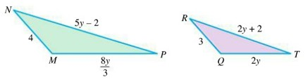

Applications of Rational Expressions
Solving for a Variable in a Formula
In many math and science courses, formulas are used to relate quantities. Sometimes we are given a formula and asked to solve for a different variable than the one that is already isolated.
One familiar example is the distance formula \(d=rt\), where \(d\) is distance, \(r\) is rate, and \(t\) is time. If the rate and time are known, then the formula gives distance. But if distance and time are known, then we may want to rewrite the formula to solve for the rate instead.
Example 1.
Solve for the indicated variable.
(a) Solve for \(r\) in \(d=rt\).
(b) Solve for \(x\) in \(A=\dfrac{x+h}{2}\).
(c) Solve for \(r\) in \(P=\dfrac{A}{1+r}\).
(d) Solve for \(m_1\) in \(F=\dfrac{Gm_1m_2}{d^2}\).
(e) Solve for \(R_1\) in \(\dfrac{1}{R_T}=\dfrac{1}{R_1}+\dfrac{1}{R_2}\).
Solving Distance and Rate Problems
Example 6.
Solve the following proportion applications.
- A scale drawing of a playground uses a scale of \(1.5\) inches for every \(12\) feet. If the actual length of a walking path is \(58\) feet, how long should the path appear on the drawing? Round to the nearest tenth of an inch.
-
Suppose the following triangles are similar. Find the value of \(y\).

Two similar triangles, △NMP and △RQT, are shown with corresponding sides labeled. In △NMP, the sides are 4, 5y − 2, and 8y/3. In △RQT, the corresponding sides are 3, 2y + 2, and 2y. The diagram is used to set up a proportion based on similarity.
The following distance-rate-time problems use the formula \(d=rt\), where \(d\) is distance, \(r\) is rate, and \(t\) is time.
Example 7.
Kellen’s boat travels \(12\) mph in still water. Find the rate of the current if she can go \(6\) miles upstream in the same amount of time that she can go \(10\) miles downstream.
| Distance | Rate | Time | |
|---|---|---|---|
| Downstream | 10 | \(12+r\) | \(\quad\) |
| Upstream | 6 | \(12-r\) | \(\quad\) |
Example 8.
A small airplane flies \(240\) miles with a \(20\) mph tailwind and then returns the same route against the wind. If the total flight time is \(5\) hours, find the speed of the plane in still air.
| Distance | Rate | Time | |
|---|---|---|---|
| With tailwind | 240 | \(\quad\) | \(\quad\) |
| Against wind | 240 | \(\quad\) | \(\quad\) |
Solving Variation Problems
Direct Variation: If \(x\) varies directly as \(y\), then \(x=ky\).
Inverse Variation: If \(x\) varies inversely as \(y\), then \(x=\dfrac{k}{y}\).
Joint Variation: If \(y\) varies jointly as \(x\) and \(z\), then \(y=kxz\).
Hint: In a direct variation, the two quantities move together. In an inverse variation, one quantity increases while the other decreases.
Example 11.
If \(x\) varies directly as \(y\), and \(x=9\) when \(y=3\), find \(x\) when \(y=12\).
Example 12.
If \(m\) varies inversely as \(p^2\), and \(m=20\) when \(p=2\), find \(m\) when \(p=5\).
Example 13.
The amount of light produced by a light source varies inversely as the square of the distance from the source. If the illumination produced \(2\) meters from a light source is \(192\) foot-candles, find the illumination produced \(6\) meters from the same source.
Example 14.
Assume \(p\) varies jointly as \(q\) and \(r^2\), and \(p=200\) when \(q=2\) and \(r=3\). Find \(p\) when \(q=5\) and \(r=2\).